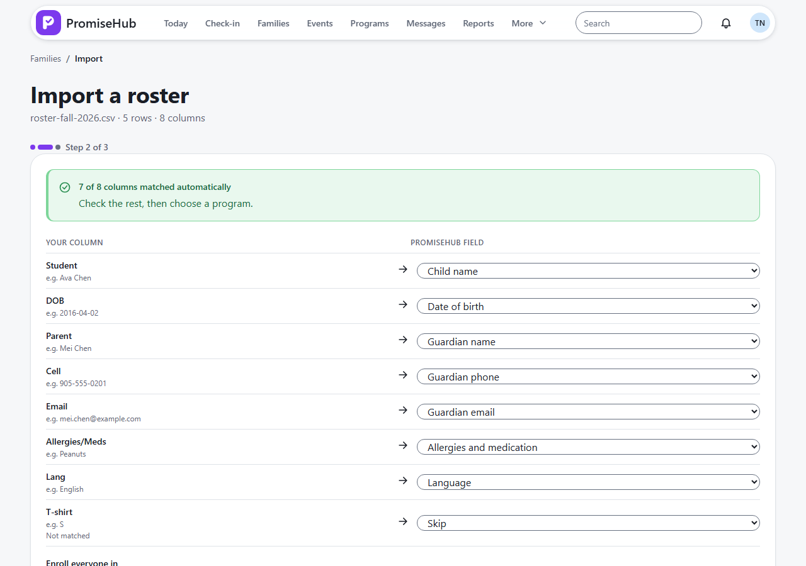
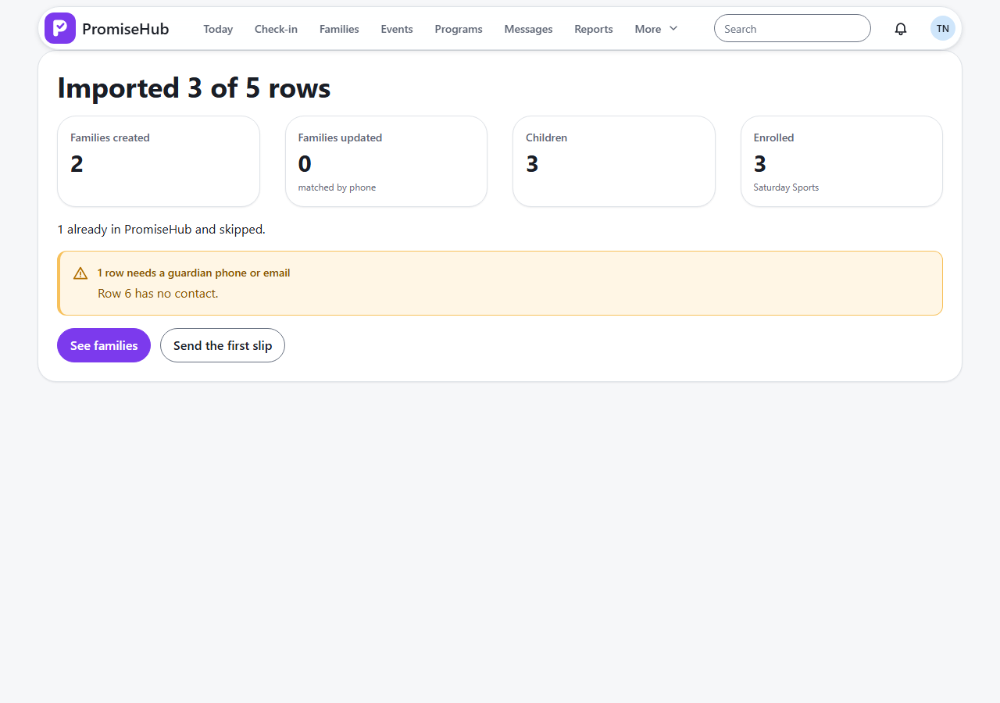

PromiseHub · Video 14
Import a roster
From the old spreadsheet to families in PromiseHub, in three steps
From the old spreadsheet to families in PromiseHub, in three steps
3 children in 2 new families; 1 row to fix.
Nothing created; the formats that work.


| Case | Answer |
|---|---|
| CSV and XLSX | Columns matched, unmatched listed |
| Not a spreadsheet | 422, nothing created |
| Same name and date of birth | Skipped unless merged |
| Site lead | 403 |
| Another organization / Roster off | 404 |
Next: families enroll their children themselves